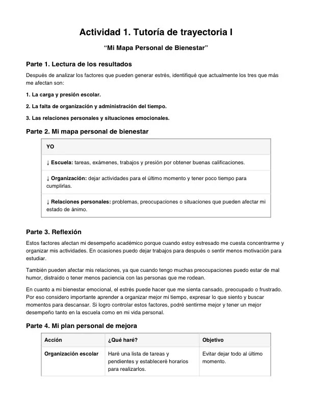
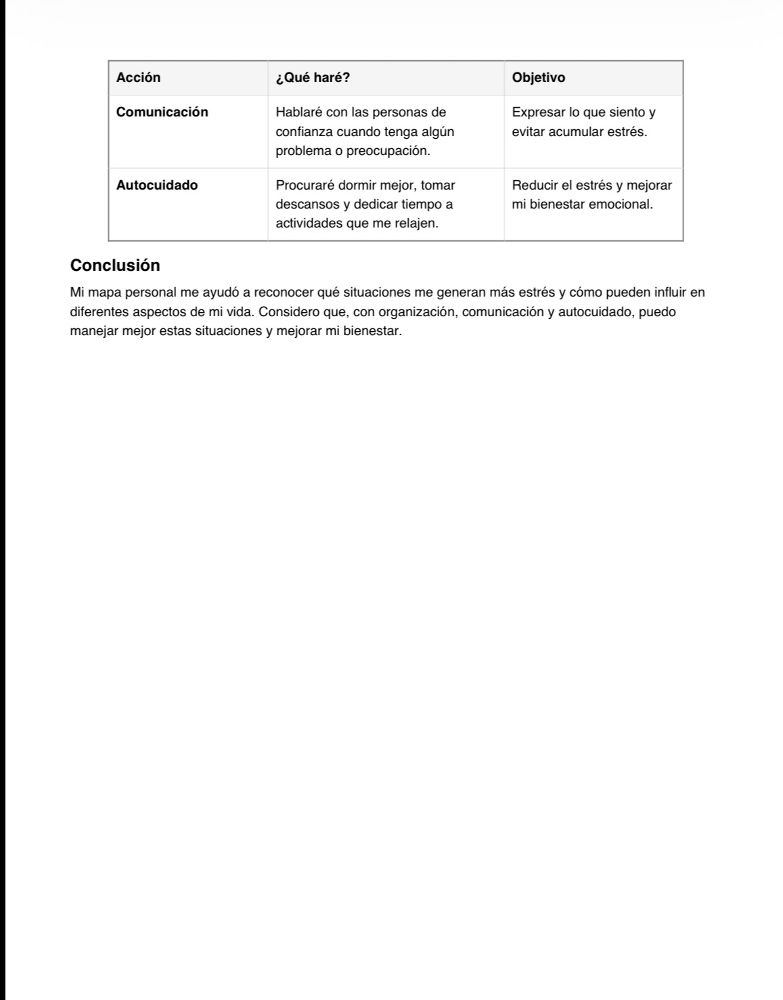

📚 Mis materias
Estas son las materias que actualmente cursamos en la preparatoria. Cada una cuenta con un apartado para mostrar evidencias de mis proyectos.
📐 Pensamiento Matemático 1
Materia enfocada en el razonamiento lógico, matemático y la resolución de problemas.
📁 Evidencias de proyectos
Aquí se pueden agregar fotografías de los trabajos y proyectos realizados.


🏃 Deporte y Recreación
Actividades físicas, deportivas y recreativas para fomentar una vida activa y saludable.
📁 Evidencias de proyectos
Evidencias de actividades deportivas y recreativas.


💻 Innovación Tecnológica y Pensamiento Computacional
Desarrollo de habilidades tecnológicas, innovación y pensamiento computacional.
📁 Evidencias de proyectos
Aquí se pueden mostrar proyectos y trabajos tecnológicos.


🧪 Química del Carbono
Estudio de las propiedades y características de los compuestos del carbono.
📁 Evidencias de proyectos
Evidencias de prácticas, actividades y proyectos de química.


🎓 Tutoría de Trayectoria 1
Espacio para acompañamiento, orientación y desarrollo durante la trayectoria escolar.
📁 Evidencias de proyectos
Evidencias de actividades y trabajos realizados en tutoría.


Inglés Nivel 3
Desarrollo de habilidades de comunicación y comprensión del idioma inglés.
📁 Evidencias de proyectos
Evidencias de actividades, trabajos y proyectos realizados en inglés.


🎨 El Mundo a Través del Arte
Exploración del arte y de diferentes formas de expresión artística.
📁 Evidencias de proyectos
Evidencias de obras, actividades y proyectos artísticos.


📖 Comprensión Lectora 2
Desarrollo de habilidades de lectura, análisis, comprensión y comunicación escrita.
📁 Evidencias de proyectos
Evidencias de lecturas, trabajos y actividades realizadas durante el curso.